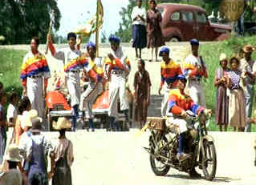

| Bingo
Long Traveling All-Stars and Motor Kings (SE)/ B+, B+ |
| Universal/1976/111/ANA
1.85 |
Wonderfully evocative film of the Negro baseball leagues just
before major league baseball broke the color line with the dramatic entry
into the National League of Jackie Robinson. Long before you could say Jack
Robinson, baseball was being played with a passion by black athletes
relegated to playing a segregated game. While the subject could be treated
in a respectful manner, Bingo Long and His Traveling
All Stars and Motor Kings chooses to create a colorful and often
hilarious view of this period in sports history.
There are many delightful elements to
the film. The concept on the “invite pitch,” which was a bit
of showmanship used by the great pitcher Satchel Paige, adds some grand fun to the movie. .And the lesson of the cake
walk as a major element to the success of barnstorming baseball makes
for some great upbeat filmmaking.
 |
| Bingo's
barnstormer cake walk ©Universal |
The actors have a field day in baseball
uniforms. Billy Dee Williams brings matinee idol presence to the role of
Bingo Long, star pitcher of the St. Louis Ebony Aces and founder of the
barnstorming all-stars. Williams has no problem with the athletic movement
needed to make a convincing Bingo and he has charm to spare. James Earl
Jones exchanges banter and shares center stage with Williams as Leon Carter,
the king of the Negro leagues home run hitters. Jones is a powerful Carter,
as always, using his beautiful voice with resonant embellishment. Long’s character was
modeled after the great black major league pitcher Satchel Paige and
Carter on legendary Negro league long-baller Josh Gibson. Richard
Pryor is hilarious as the all-star conniving to enter the big leagues by
posing as a Cuban instead of an American Negro.
John Badham
does a splendid job in his feature film directing debut. Bingo Long
is
perfectly paced. Badham gets fine performances from all his actors,
insuring that this wonderful portrait of another time in our history
comes to loving screen realization.
Color is the key to the lovely transfer of
Bingo Long. Intense saturation marries with the bigger than life
images. Very inviting! Contrast range is excellent in all lighting
conditions. Blacks are deeply delivered. There is a seamless, film-like quality to the images.
Most scenes are very sharp with peak transition ringing barely in
evidence. The upbeat
musical score sounds fresh and adds its measure of delight to the
production.
Director John Badham's warm commentary shares
the sheer joy of making Bingo Long. His memories of making the film are
clear-eyes and unaffected. Badham shares some of the history of the
reality of the Negro baseball leagues. Badham sometimes resorts to describing
scenes that are self-evident.
Bingo Longo is a joyous cake walk of a movie!
Reviewed on a Sharp 9000VX DLP Projector
|
|
|
|

Selections from the Feature
Archive include articles on
Akira Kurosawa, Frank
Darabont, Blonde
Bimbos, Hollywood
Street Gangs, or Vietnam:
The Hollywood Pariah, and many more....
Want to compare the home run swing of Jack Elliot to former
Japanese Home Run King Daryl Spencer? Click on the baseball for Fastballs
in Japan.

 Have
you visited Home Theater Talk
lately? One of the friendliest places on the Net for Home Theater and
DVD discussion, you can get help for installation problems or simply
share your opinions with other Vidiots. Have
you visited Home Theater Talk
lately? One of the friendliest places on the Net for Home Theater and
DVD discussion, you can get help for installation problems or simply
share your opinions with other Vidiots.

"CinemaQuest
has matched the correct TV color of gray in a light fixture."__Joe
Kane
Monitor bias lighting in a pre-packaged configuration. Take the strain
off your eyes.

Comprehensive DVD review
database. Easy to use interface with specific region searches.

Lady
Eve, The (SE) A,C+

Wonderful classic comedy from writer/director Preston Sturges. Henry
Fonda and Barbara Stanwyck star.

The
Movie Poster Archive includes extensive poster images from the films of
stars like Susan Hayward, Kirk Douglas, Katharine Hepburn and many
more. Our featured star is Frank
Sinatra. |